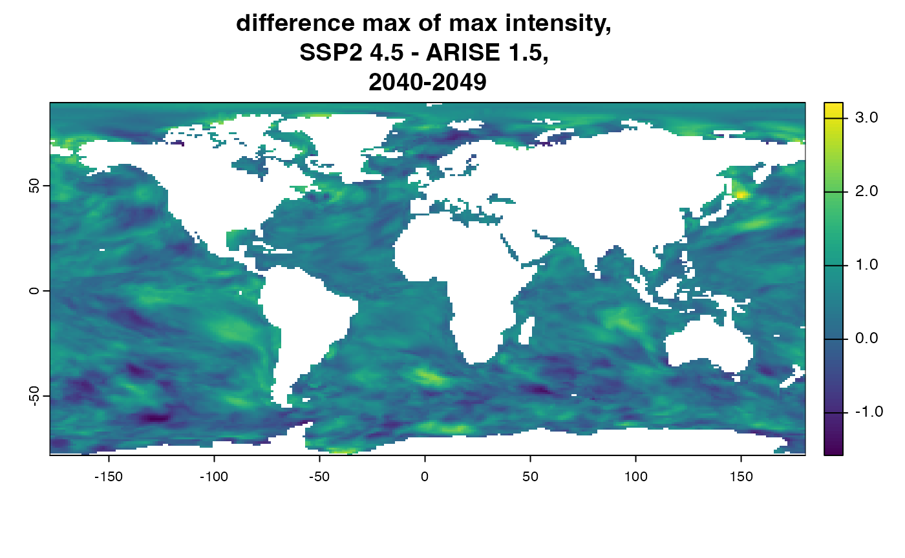
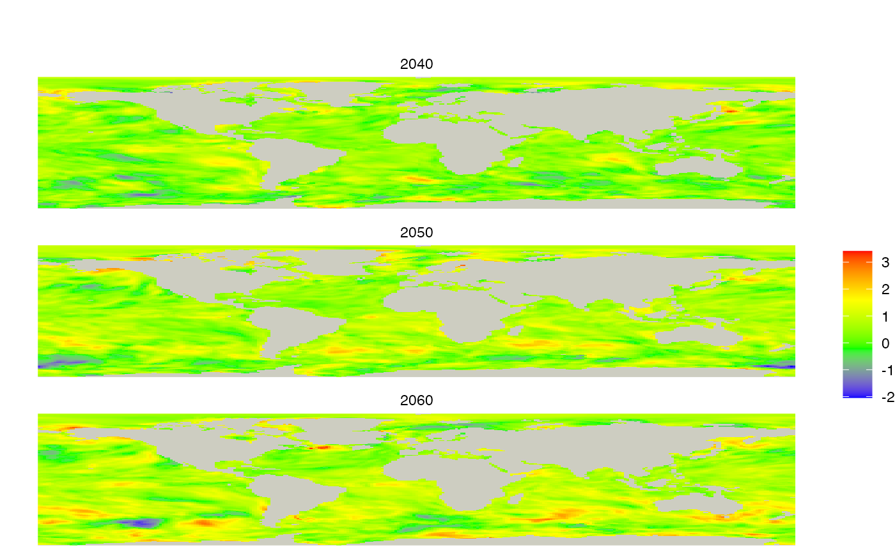

plotting_differences_of_other_metrics
plotting_differences_of_other_metrics.Rmd
library(mhwci)
devtools::load_all()
#> ℹ Loading mhwci
#> Loading required package: terra
#>
#> terra 1.7.78
#>
#> Loading required package: ggplot2
#>
#> Loading required package: tidyterra
#>
#>
#> Attaching package: 'tidyterra'
#>
#>
#> The following object is masked from 'package:stats':
#>
#> filter
#>
#>
#> Loading required package: stringr
#>
#> Loading required package: magrittr
#>
#>
#> Attaching package: 'magrittr'
#>
#>
#> The following objects are masked from 'package:terra':
#>
#> extract, inset
#>
#>
#> Loading required package: duckdb
#>
#> Loading required package: DBI
#>
#> Loading required package: dbplyr
#>
#> R.matlab v3.7.0 (2022-08-25 21:52:34 UTC) successfully loaded. See ?R.matlab for help.
#>
#>
#> Attaching package: 'R.matlab'
#>
#>
#> The following objects are masked from 'package:base':
#>
#> getOption, isOpen
#>
#>
#> Linking to GEOS 3.11.0, GDAL 3.5.3, PROJ 9.1.0; sf_use_s2() is TRUE
db <- mhw_connect(get_dbfile())
#> Warning in get_dbfile(): default dbfile set to
#> /Users/billspat/Code/SpaCELab/marine_heatwave_work/mhwci/db/mhwci_v4.dbPlotting differences of other metrics
Currently this package has functions that only compute summaries of duration, which were created at beginning as we designed the workflow.
There is a generic function mhw_metric_summary_sql()
Example difference for one decade:
Calculate the differences of the max of max intensity (extremes) only for 2040 to 2049
# in thse two function calls, all the parameters are the same
valid_ensembles <- "006,007,008,009,010"
arise15_sql <- mhw_metric_summary_sql(mhw_table = "arise15_decade_metrics",
mhw_metric = 'int_max',
sql_function = 'max',
start_year=2040,
end_year=2049,
ensemble_list_string = valid_ensembles)
arise15_raster <- summary_metrics_raster(db, arise15_sql)
## ---
ssp245_sql <- mhw_metric_summary_sql(mhw_table = "ssp245_decade_metrics",
mhw_metric = 'int_max',
sql_function = 'max',
start_year=2040,
end_year=2049,
ensemble_list_string = valid_ensembles)
ssp245_raster <- summary_metrics_raster(db, ssp245_sql)
arise_max_int_diff <- ssp245_raster - arise15_raster
plot(arise_max_int_diff, main = "difference max of max intensity, \nSSP2 4.5 - ARISE 1.5, \n2040-2049") ### Example difference plot for 3 decades:
Calculate the differences of the max of max intensity
# we are using an 'internal' function write to be used inside an 'lapply()'
# it's easier to set variables set above or hard-coded values in the function
# we apply, but see the `lapply()` help for how to send extra parameters
# adjust the parameters inside our function to change which metric is calculated
# takes on parameter - the one we are applying over (decade start years)
make_raster_function<- function(period_start_year ) {
# make the sql
mhw_sql <- mhw_metric_summary_sql(mhw_table = mhw_table,
mhw_metric = 'int_max',
sql_function = 'max',
start_year = period_start_year,
end_year = period_start_year + period_length_years - 1,
ensemble_list_string = "006,007,008,009,010")
# call the sql and create the raster
mhw_raster <- summary_metrics_raster(db, mhw_sql)
return(mhw_raster)
}
## ---
# set the parameters here for the apply function
# db is already set above, otherwise use `db <- mhw_connect(dbfile)` again
start_years <- c(2040, 2050, 2060)
period_length_years <- 10
mhw_metric <- 'int_max'
sql_function <- 'max'
# set the table that the function above will use
mhw_table <- "ssp245_decade_metrics"
ssp245_rasters <- lapply(start_years, make_raster_function)
# terra requires this step in it's own line to create a 'raster stack' of 'spat rasters'
ssp245_rasters <- terra::rast(ssp245_rasters)
# use the start years for name of list items
names(ssp245_rasters) <- start_years
mhw_table <- "arise15_decade_metrics"
arise15_rasters <- lapply(start_years, make_raster_function)
arise15_rasters <- terra::rast(arise15_rasters)
# use the start years for name of list items
names(arise15_rasters) <- start_years
# I believe the lists must have the same 'names' for subtraction to work with
# a list of rasters
mhw_diffs <- ssp245_rasters - arise15_rasters
mhw_diffs
#> class : SpatRaster
#> dimensions : 178, 287, 3 (nrow, ncol, nlyr)
#> resolution : 1.25, 0.9424084 (x, y)
#> extent : -178.125, 180.625, -78.2199, 89.5288 (xmin, xmax, ymin, ymax)
#> coord. ref. :
#> source(s) : memory
#> names : 2040, 2050, 2060
#> min values : -1.577501, -2.042140, -1.860162
#> max values : 3.214764, 3.252153, 3.409546Plot:
plot_rasters_squish_outliers(mhw_diffs)
DBI::dbDisconnect(db)